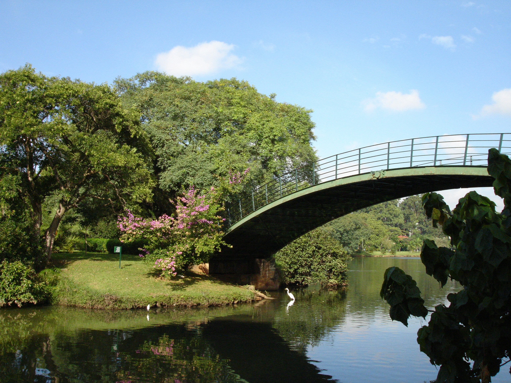

Minhocao
Named 'the big worm', this freeway cuts the center of the city and it is transformed into an open sky park in the middle of buildings and historical places. All Sundays and Holidays, the Minhocao gets closed for cars, and people of all ages gather around to practice sports, see art exhibits, and get some sunlight.

Tokyo Nightclub
A nightclub located in the rooftop of an important building in downtown Sao Paulo, Tokyo Nightclub also offers food, drinks, and private karaoke rooms to be enjoyed while looking at an amazing view of Sao Paulo from above.

Paulista Avenue
The main avenue of Sao Paulo, the Paulista Avenue is the hub of enterpreneurship of the country, and it also has some of the best museums, stores, and restaurants in the city.
Sao Paulo's version of Central Park, Ibirapuera, is the biggest park in the city, having 158 hectares, a lake, and even a museum inside.